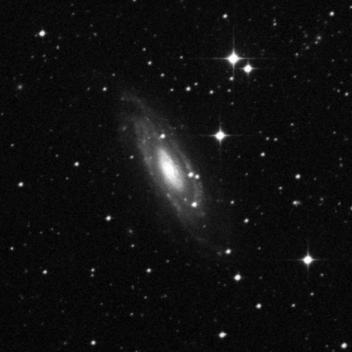
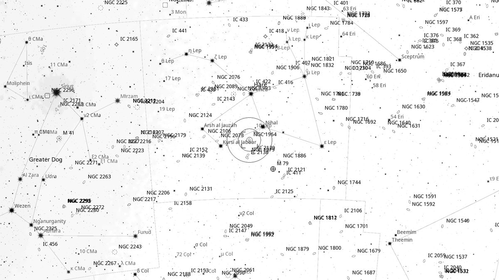
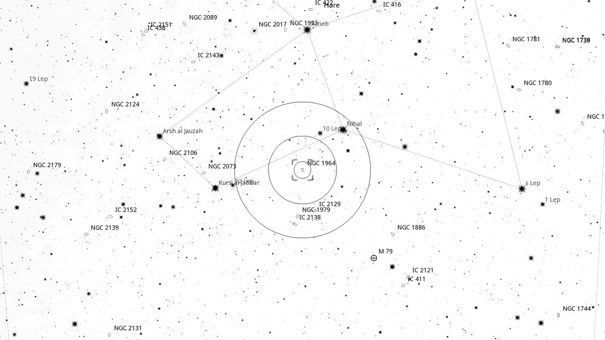
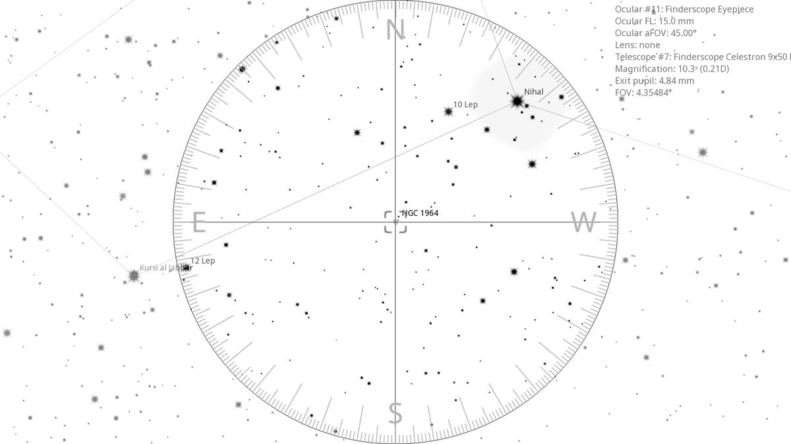
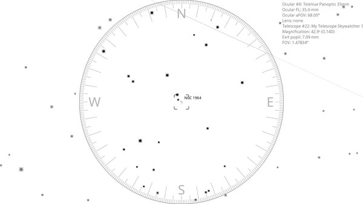

NGC 1964 (Gal)
Galaxy in Lepus
| R.A. | Dec. | Size | Mag | SB | Cnt.St | Type | Distance | Chart |
|---|---|---|---|---|---|---|---|---|
| 05h 33m 20.8s | -21° 56′ 56.1″ | 2.3′ | 10.8 | 11.6 | Sb | Gal | -- | -- |

Source: POSS-2 UK Schmidt Red (STScI) | Field: 10′ × 10′
Background
NGC 1964 is an edge-on barred spiral galaxy 70 million light-years away in Lepus. About 5'×2' apparent size, magnitude 10.8. Deep imaging reveals delicate spiral structure and a small, bright nucleus.
My Observing Notes
30-cm (SkyWatcher 12-inch f/5): Sits only 1.7° from β Lep, easy to locate after observing M79. Easy to pick out in the FOV — the elongated disk is interrupted by a bright knot or stellar core. Worth revisiting with a Club scope to see if extra aperture pulls out spiral detail.(Friday, March 2026)
References
Charts

Ultra-wide view (~25° field)

Wide-field view with Telrad rings (4°, 2°, 0.5°)

Finderscope view (9×50 RACI, ~4.4° TFOV)

Eyepiece view — 35 mm Panoptic on 12-inch f/5 (1.6° TFOV)